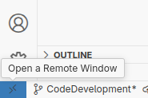

Code development
Development environment
By far the easiest way to work on the remote nectar cluster is to install Visual Studio Code on your laptop. It is available for Windows, Mac, Linux.
Once installed and started, go down to extensions and install Remote - SSH, Python and Jupyter Just search for the names in the extension tab as shown below, click on it and install.

Note:
As always be careful when you install software. Check that all the etension above have themicrosoft.combadge on them before you click install. For other extensions do your due diligence. Do they have millions of installations, is it a case of typo squatting, read the reviews!
After installing the extensions, you can now connect to the nectar cluster by clicking on the small set of arrows in the very bottom left of the window, then select Connect to Host ... and pick nectar9 from the list. It should now open a new window where you now work on the remote nectar9 machine. If nectar9 is not in the list, something has been missed in the section on obtaining an account. The first time you connect, you might have to pick linux as the type for the remote.
  .
.
Setup your coding area
For a given project, you only need to do everything below once.
LHCb has created an Analysis Repository Skeleton which provides a great place for you to start developing your code. When you eventually has to share your code with somebody else, then it becomes much easier if they see a familiar structure.
Follow the instructions to set up the repository
download a local copy. The commands in the last step should be executed in a terminal window on
nectar9, see images.
!
 .
3. You can ignore the rest of the instructions on the Analysis Repository Skeleton page now and come back to it later if required.
4. To setup the python environment for coding, in a terminal window inside your skeleton directory set up a virtual environment that is based on the shared LHCb conda environment.
.
3. You can ignore the rest of the instructions on the Analysis Repository Skeleton page now and come back to it later if required.
4. To setup the python environment for coding, in a terminal window inside your skeleton directory set up a virtual environment that is based on the shared LHCb conda environment.
lb-conda-dev virtual-env default/2025-07-31 lb-python
Now in the MVC window open the skeleton folder
 .
.Type
ctrl-shift-pand at the prompt typePython: Select Interpreterand then pick the line that haslb-pythonin it.
Note:
If you do not yet have a computing account at CERN, you should just ignore step 1 above and in step 2, replace thegit clonecommand withgit clone https://gitlab.cern.ch/lhcb-dpa/wp6-analysis-preservation-and-open-data/analysis-repo-skeleton.git
Edit and run a Jupyter notebook
To edit a Jupyter notebook, create a new file with the extension .ipynb in the python folder inside your skeleton project. To select the kernel, pick Python environments and then the lb-python option. You can try the following script. If it runs and produce a histogram, everything is good.
import ROOT
import numpy as np
# Generate random numbers
data = np.random.normal(loc=0, scale=1, size=1000)
# Create a ROOT histogram
hist = ROOT.TH1F("hist", "Random Numbers Histogram", 50, -4, 4)
# Fill the histogram
for value in data:
hist.Fill(value)
# Draw the histogram
canvas = ROOT.TCanvas("canvas", "Canvas", 800, 600)
hist.Draw()
canvas.Draw()
If you see red wiggly lines under the packages that you import, you might have done something wrong with setting up the environment or with selecting the kernel.